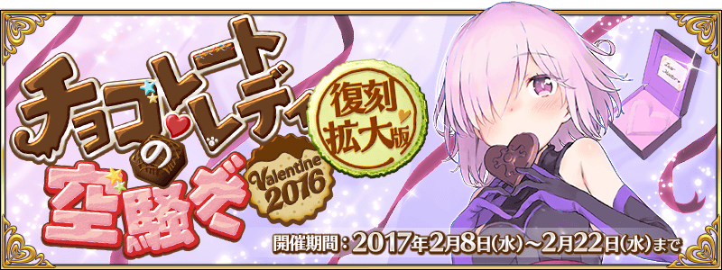
◆活動舉辦期間◆
2017年2月8日(三) 18:00～2月22日(三) 12:59
◆活動概要◆
說到2月14日當然就是情人節！
因此，舉辦期間限定活動「復刻：巧克力・女士的大驚小怪 -Valentine 2016- 拡大版」！
Servant們似乎照各自的心意準備了特製巧克力，想告訴各位Master什麼事。
另外，在本活動中不僅能從Servant收到巧克力，還能拿到回禮給Servant的巧克力。
挑戰在管理室(ターミナル)出現的關卡，收集活動専用道具「職階別硬幣巧克力」，從中意的Servant收到巧克力和回禮吧！
※能領取･回禮巧克力的對象，只限有入手履歷的Servant。
※本活動為於2016年舉辦得「巧克力・女士的大驚小怪 -Valentine 2016-」，追加一部份要素的「擴大版復刻活動」。
◆参加條件◆
只限通過教學的Master才能參加
※開發中畫面。
交換期間：2017年2月8日(三) 18:00～3月1日(三) 13:59
※交換期間結束後，「職階別硬幣巧克力」會消失。
在達文西工房内的「活動道具交換」，使用活動専用道具「職階別硬幣巧克力」，就能交換每位Servant有所不同的活動限定概念禮裝「巧克力」。
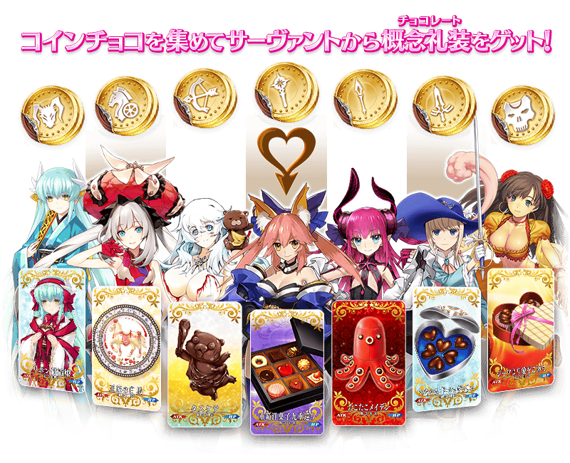
另外，在達文西工房内的「活動道具交換」，使用活動専用道具「職階別硬幣巧克力」，將巧克力交給對象Servant，就能交換每位Servant有所不同的活動限定概念禮裝「回禮」。
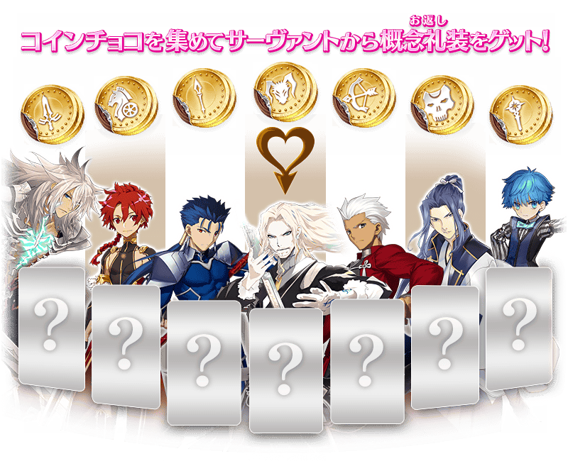

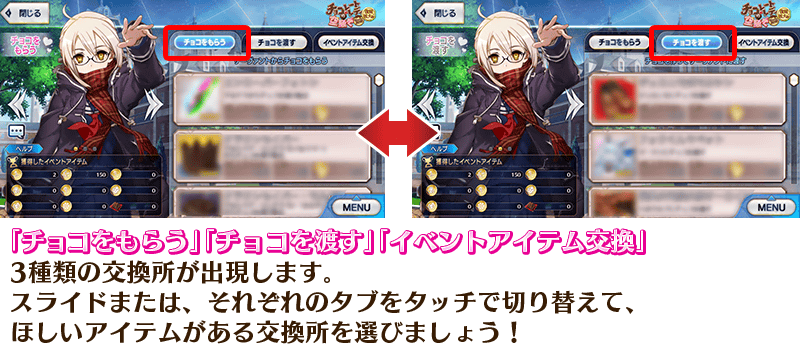
※關於沒有入手履歴Servant的活動限定概念禮裝，不會顯示在活動道具交換的名單。
※開發中畫面。
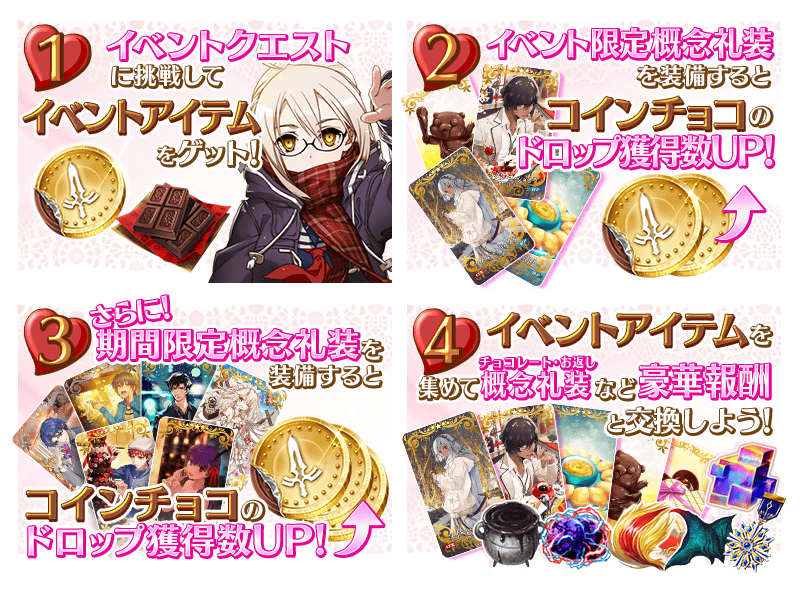
◆超值攻略方法・其1◆
使用能靠活動道具交換和關卡報酬等獲得的推進道具「職階別巧克力模型」的話，可讓在關卡出現的敵人變成限定與使用的「職階別巧克力模型」人同樣職階的敵人。
推進道具「職階別巧克力模型」在關卡開始前，可任意選擇1個消費。
由於能將出現敵人限定成目標職階，容易獲得目標「職階別硬幣巧克力」。
使用對應目標的推進道具，收集「職階別硬幣巧克力」吧！
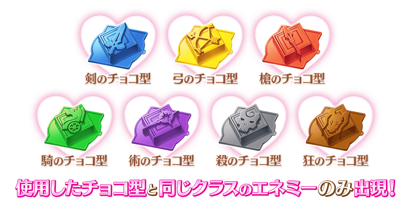
※職階別巧克力模型在2月8日(三)～2月14日(二)的7天內，每天23:00進行配發任一種巧克力模型5個。
無論如何請多加利用。
◆超值攻略方法・其2◆
裝備活動限定概念禮裝「★5(SSR)スイート・クリスタル」「★5(SSR)フォンダン・オ・ショコラ」的話，會提升所有職階硬幣巧克力的掉落獲得數。
另外，裝備從Servant收到巧克力和回禮的概念禮裝的話，會提升該概念禮裝Servant的職階硬幣巧克力的掉落獲得數。
※請注意在各關卡的道具掉落率並非100%。
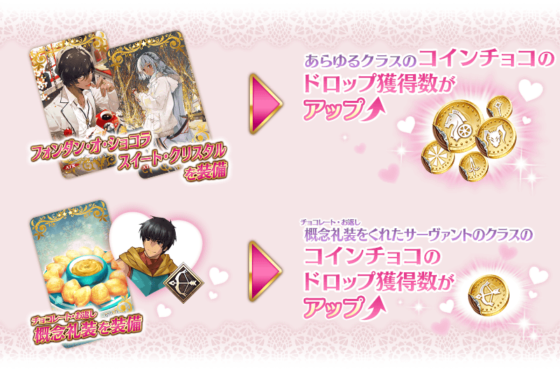
◆超值攻略方法・其3◆
裝備期間限定概念禮裝「★5(SSR)キュート・オランジェット」「★4(SR)チョコ・エンゼル」「★3(R)ブレスフル・タイム」「★5(SSR)ショコラティエ」「★4(SR)ビター・ブラック」「★3(R)勝者の余裕」的話，會提升裝備Servant的對峙職階硬幣巧克力的掉落獲得數！
各自裝備時提升掉落獲得數硬幣巧克力如下。
Saber職階的Servant裝備→槍之硬幣巧克力的掉落獲得數提升
Archer職階的Servant裝備→劍之硬幣巧克力的掉落獲得數提升
Lancer職階的Servant裝備→弓之硬幣巧克力的掉落獲得數提升
Rider職階的Servant裝備→術之硬幣巧克力的掉落獲得數提升
Caster職階的Servant裝備→殺之硬幣巧克力的掉落獲得數提升
Assassin職階的Servant裝備→騎之硬幣巧克力的掉落獲得數提升
※Berserker職階的Servant裝備的情況，會提升狂之硬幣巧克力的掉落獲得數。
※Extra職階的Servant裝備的情況，會提升全之硬幣巧克力的掉落獲得數。
※請注意在各關卡的道具掉落率並非100%。
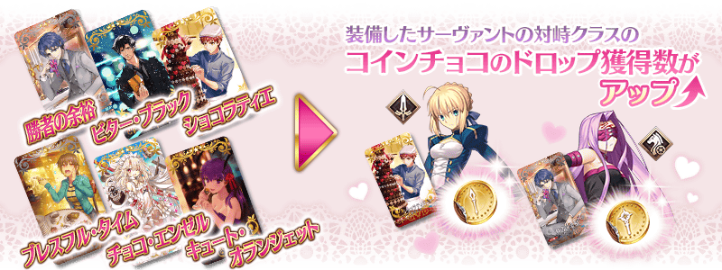
◆超值攻略方法・其4◆
在2016年舉辦時獲得的活動限定概念禮裝「★5(SSR)メルティ・スイートハート」及各Servant的巧克力概念禮裝、期間限定概念禮裝「★5(SSR)ストリート・チョコメイド」「★4(SR)キッチン☆パティシエール」「★3(R)涙のバレンタイン道場」也會賦予各自硬幣巧克力的掉落獲得數提升效果。
※活動限定概念禮裝「★5(SSR)メルティ・スイートハート」在2017年版的活動內無法獲得。另外，自2017年2月8日(三) 18:00追加到「稀有稜鏡交換」的交換道具。
※請注意在各關卡的道具掉落率並非100%。
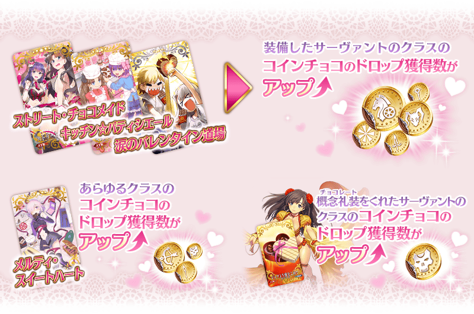
| 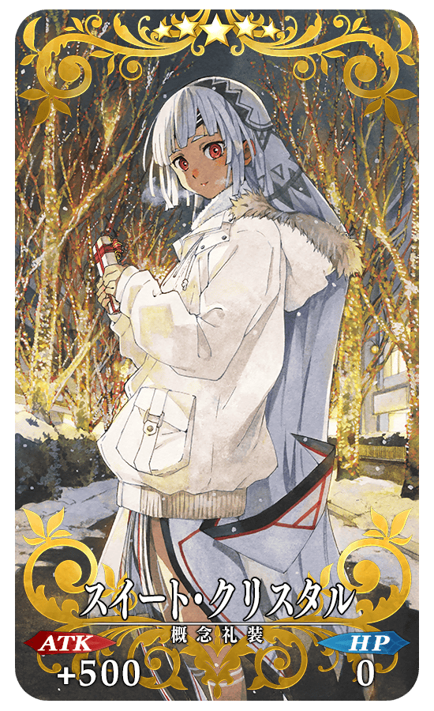 |
★★★★★SSR |
| 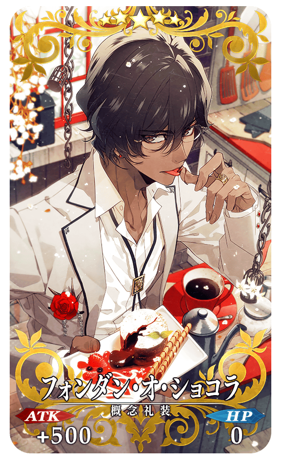 |
★★★★★SSR |
◆交換方法◆
交換期間：2017年2月8日(三) 18:00～3月1日(三) 13:59
※交換期間結束後，「材料巧克力」「職階別硬幣巧克力」「職階別巧克力模型」會消失。
從達文西工房内的「活動道具交換」，用收集來的活動專用道具來交換以下的道具。
◆可用材料巧克力(材料チョコ)交換的道具◆
 |
【活動限定概念禮裝】 【技能強化＆靈基再臨素材】 【靈基再臨素材】 【其他道具】 |
◆可用職階別硬幣巧克力(クラス別コインチョコ)交換的道具◆
|
【活動限定概念禮裝】 【其他道具】 |
◆可用全之硬幣巧克力(全のコインチョコ)交換的道具◆
|
【活動限定概念禮裝】 【其他道具】 |
◆可用職階別巧克力模型(職階別チョコ型)交換的道具◆
※自2月22日(三) 13:00開放
| 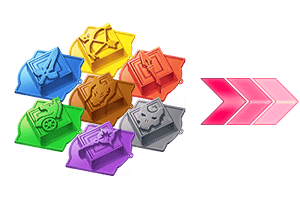 |
【其他道具】 |

|
在達文西工房的「稀有稜鏡交換」，追加交換道具。 ◆追加時間◆ ◆追加道具◆ |
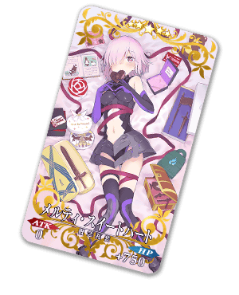 |
在達文西工房追加「Servant保管欄位增加」「概念禮裝保管欄位增加」的2選項。
保管欄位的擴張是使用魔力稜鏡。
每次進行保管欄位的擴張為5欄位，最多可擴張到100欄位。
因此保管欄位加上既存欄位最多200欄位。
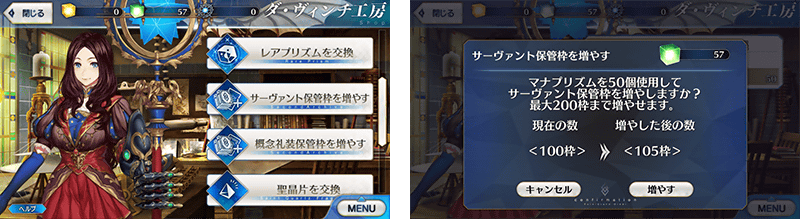
關於以對活動攻略有利的期間限定概念禮裝為召喚對象「情人節2017Pick Up召喚」，詳情請在下方橫幅或此處確認。